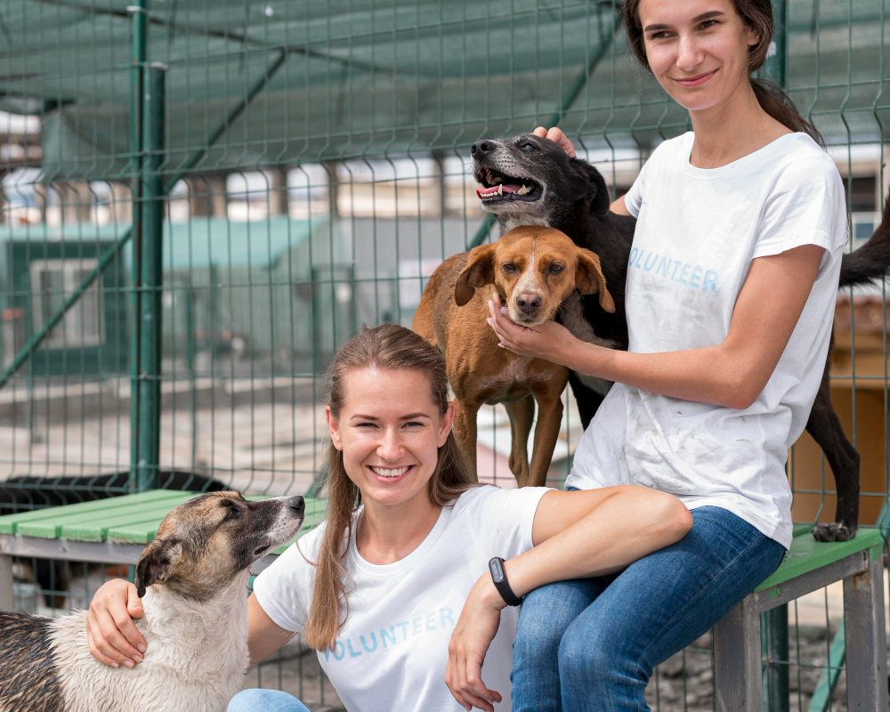

¡Bienvenidos a Patitas Felices!
Nuestro refugio alberga a más de 100 animales que esperan por un hogar. Contamos con la ayuda de donaciones para poder seguir rescatando y brindando ayuda para que tengan una vida digna, fuera de la calle. Creemos en la buena predisposición de la gente que nos ayuda y nuestros voluntarios que brindan hogares de tránsito y nos ayudan a mantener este proyecto en pie.
Somos un equipo de personas impulsadas por la empatía hacia los animales, reconociéndolos como nuestros semejantes dedbido a su capacidad para experimentar alegría, dolor y sufrimiento. Nuestra misión consiste en inspirar un cambio de mentalidad que repercuta positivamente en la crítica situación que enfrentamos, vinculada a la sobrepoblación, el abandono, la crueldad y la indiferencia que afectan a millones de perros y gatos en nuestro país.
Nuestros rescatados
Todos nuestros rescatados están esperando por un hogar. Animate a sumarlos a tu familia, ellos merecen una vida digna y llena de amor. ¡Vení a conocerlos! No te vas a arrepentir.
Vaquita
Edad: 3 añosRaza: Mestizo
Se lleva bien con
gatos, perros y niños.
Nina
Edad: 4 añosRaza: Mestizo
Se lleva bien con
perros. Con gatos no.
Ramón
Edad: 6 añosRaza: Mestizo
Se lleva bien con
perros, gatos y niños.
Milo
Edad: 2 añosRaza: Galgo
Se lleva bien con
niños. Perros y gatos no.